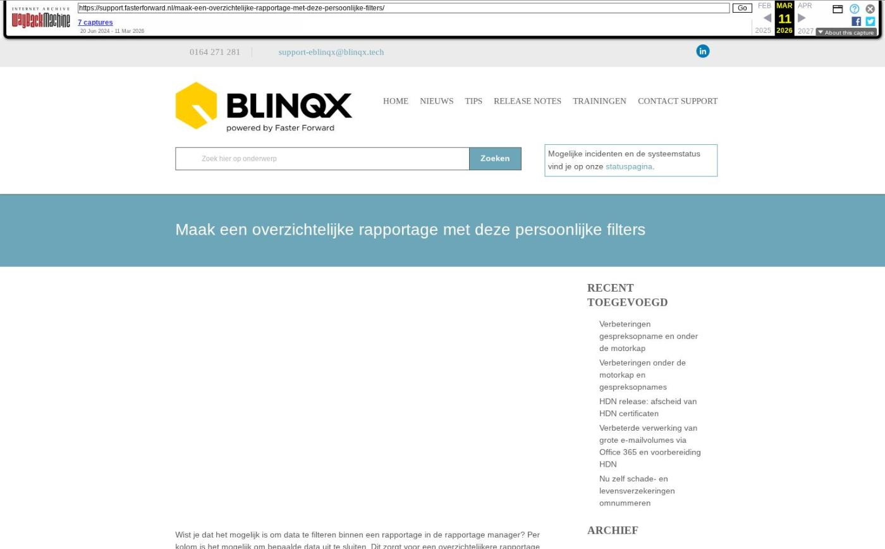

Maak een overzichtelijke rapportage met deze persoonlijke filters

Tekstinhoud
Title: Maak een overzichtelijke rapportage met deze persoonlijke filters
URL: https://web.archive.org/web/20260311225331/https://support.fasterforward.nl/maak-een-overzichtelijke-rapportage-met-deze-persoonlijke-filters/
Source element: <article>
---
Wist je dat het mogelijk is om data te filteren binnen een rapportage in de rapportage manager? Per kolom is het mogelijk om bepaalde data uit te sluiten. Dit zorgt voor een overzichtelijkere rapportage. Deze filters stel je persoonlijk op jouw account in. Jouw collega krijgt deze filters niet te zien als hij de rapportage opent.
Een persoonlijke selectie wordt vaak gebruikt om bij nieuwsbrieven bepaalde mailadressen uit te sluiten, omdat deze klanten zich hiervoor hebben afgemeld. Ook kan het gebruikt worden om bijvoorbeeld het aantal schademeldingen te bekijken van een bepaalde periode. Je kunt dus de rapportage naar jouw wensen instellen. Op onze supportwebsite is een uitgebreid artikel te vinden over het gebruik van rapportages en het instellen van de persoonlijke selectie.
Heb je hulp nodig bij het aanmaken van je persoonlijke selecties? Of wil je jouw persoonlijke selectie juist wel delen met je collega's? Neem dan contact op met support@fasterforward.nl
Rapportages openen
Schademeldingen in bepaalde periode
Hypotheken van een bepaalde geldverstrekker
Niet afgemeld voor een nieuwsbrief
Alleen bestaande klanten
Aanbrenger als persoon of organisatie noteren
Meer voorbeelden
Ook interessant:
Rapportages openen
Om rapportages te bekijken, zoek je in het menu linksboven op 'Rapportage manager'.
In de rapportage manager zie je de beschikbare rapportages. Je opent de gewenste rapportage. Om een persoonlijke selectie in te stellen klik je op 'Toon uw persoonlijke selectie' en vervolgens op het plusicoon voor 'uw persoonlijke selecties'.
Schademeldingen in bepaalde periode
Wil je de schademeldingen bekijken voor een bepaalde periode?
Maak dan in de rapportage 'CRM – Overzicht schademeldingen' deze persoonlijke selectie, waarbij schademeldingen van 2023 zijn uitgesloten.
Hypotheken van een bepaalde geldverstrekker
Wil je een overzicht zien van de hypotheken van een bepaalde geldverstrekker?
Maak dan in de rapportage 'Hypotheek – Overzicht belangrijke datums tot aan passeren' deze persoonlijke selectie. Zo zie je alleen de dossiers waarbij ABN AMRO de geldverstrekker is.
Niet afgemeld voor een nieuwsbrief
Wil je een mailing versturen, maar voorkomen dat je mensen mailt die zich hebben uitgeschreven?
Maak dan deze persoonlijke selectie, waarbij dossiers met daarin CRM actie 'afgemeld' zijn uitgesloten.
Dit kan bijvoorbeeld in de rapportage 'CRM – Klanten o.b.v. dossier'.
Als personen zich hebben aangemeld of afgemeld voor je nieuwsbrief, kun je dit vastleggen in een klantdossier onder 'CRM acties'. Dit moet je wel gedaan hebben om bovenstaande selectie te kunnen toepassen.
Alleen bestaande klanten
Wil je een overzicht van je klanten? Gebruik dan onderstaande filter om alleen dossiers te zien die de dossierstatus 'Klant' hebben. Dit kan bijvoorbeeld in de rapportage 'CRM – Klanten o.b.v. dossier'.
Aanbrenger als persoon of organisatie noteren
Werk je met een aanbrengbonus? Het is mogelijk om in de diensten een aanbrenger als persoon of organisatie te noteren. Een overzicht van deze aanbrengers kun je ophalen in de rapportage 'CRM – Pijplijn informatie' om vervolgens periodiek de aanbrengers te belonen. Hiervoor gebruik je de onderstaande persoonlijke selectie.
Meer voorbeelden
Hieronder zie je nog een aantal voorbeelden welke filters je kan gebruiken.
Ook interessant:
Uw, jouw, jullie? Met deze instelling gaat het vanzelf goed
Weet precies welke stukken worden afgekeurd en door wie
Blije klanten met deze 6 Uwkluis features
Geplaatst op 26 oktober 2023 (Laatste update: 17 april 2024)